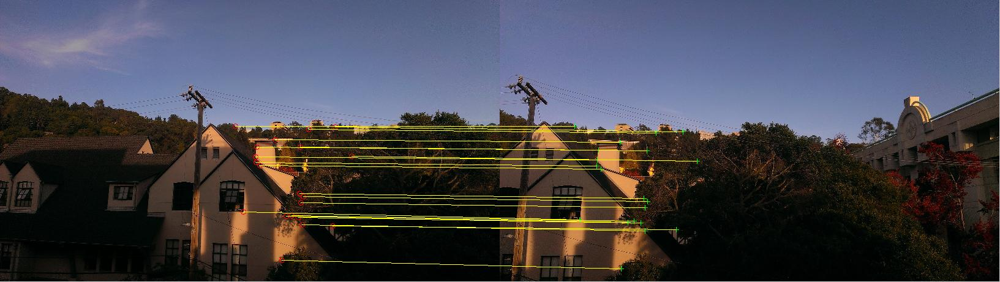

Project 7 Part 2: Automatic Image Warping and Mosaics
Alan Yao
The previous part, which has larger panoramas and some other Bells & Whistles, can be found
here.
Description
Image alignment and stitching algorithms and techniques are quite common. They're found in daily use in cell phones, digital cameras, video cameras, et cetera. Notably, given two images of the same scene, if the two images were taken from a similar location (or the images are of a far-away or planar scene), we can reconstruct the full scene by applying a camera transformation onto one image to warp it into the space of the other image.
More concretely, we can compute the projective transformation matrix H on homogenous coordinates in the canonical camera coordinate space. That is, we transform image coordinates x in [0, xmax] and y in [0, ymax] to [-1, -1] and [-a, -a], where a is the aspect ratio. Then we take the homogenous coordinates, where the image is at distance 1 from the camera, and compute a full 8-dof 2D perspective transformation (keeping the scaling parameter constant). At least 4 will be required to specify a homography.
In this part, we'll explore some additional techniques to produce better images, and take advantage of projective transformations.
Automatic Image Alignment
Following the given process, we can stitch our images automatically.

1. Find the Harris detector corner points. This can be done either by convolving with the Harris matrix or using a built-in library (faster).

2. Use Adaptive Non-Maximal Suppression to get a well-distributed set of interest points. The output points from ANMS are circled in blue. I arbitrarily chose to find the min(n, max(500, n/6)) strongest points. This is done by computing the suppression radius (the minimum absolute distance from p1 where a point p2 exists that has a stronger value) for each point, then sorting.

3/4. Extract features as a 9x9 patch around each interest point, after gaussian blurring and downsizing by a factor of 4. Then match features by SSD, threshholding on the ratio between the nearest neighbor and the second-nearest neighbor. Take the 30 strongest matches.
5. Using RANSAC, find a set of matching inlier points by going through multiple iterations. Essentially, we select 4 random points, compute H, and find the number of points that are within 1 pixel of where they should be after transformation; this is the inlier set. Then over multiple iterations, we maximize the size of the inlier set, and use that set to compute the least-squares approximation of H to use for projective warping.

6. Warp and stitch the images together as shown in the previous part.
Another example:

And finally, a harder, nighttime stitch of SF:
Bells & Whistles : Multi-Scale patches
All of the example images shown were stitched using multi-scale patches. The way multi-scale patches work is simple; we take the image pyramid of the input images to 5 levels, and find corner points and matching patches within those pyramid levels. After finding the matching points at each level, we combine all the matching points and remove duplicates to run RANSAC on.
Below, I demonstrate the points detected at each level of the image for the picture of Sutardja Dai.
Bells & Whistles : Rotational Invariance
The orientation of each detected corner point can be determined from the gradient directions at each point. We smooth the x and y image gradients first, to minimize noise. Then at each point, we compute the angle as a vector:
where u is just [dx dy], the gradient at the harris point.
Then when extracting patches, we simply multiply each (X, Y) point in the 9x9 surrounding meshgrid around the harris point by the 2D rotational matrix according to the computed theta to get the rotated patch indices, and use those rotated patches to match images.
Below, I demonstrate two examples of rotated images. Rotational invariance is used in all images generated.

Here, despite that the second image is rotated 90 degress, we still find matching points and a successful stitch is made.
A partially rotated picture still aligns well, even though a lot more information is missing.
Bells & Whistles : Panorama Detection
Naive panorama detection is fairly simple to implement. The n^2 algorithm goes as follows:
1. For each pair (i, j) of images, detect matches and compute the set of matching points (N_f) and the set of RANSAC inliers (N_i).
2. Using Bayes rule, we find that for a probability threshhold of p=0.97, we have satisfy the hypothesis test of the pair being a mosaic if we satisfy the condition:
N_i > 5.9 + 0.22*N_f
3. We filter on this condition and reject pairs that do not satisfy.
This can be sped up to O(N log N) time using a k-d tree, but we will skip that implementation for this project.
Below I demonstrate an example dataset, and the detected panorama.
Dataset:
Detected Panoramas:
What I learned
Projective transforms are a fundamental part of computer graphics, and of course would play an equally fundamental role in CV. There's still a wide range of applications to explore, such as scene layout detection and reconstruction.